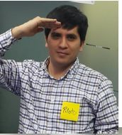

<!--
@license
Copyright (c) 2016 The Polymer Project Authors. All rights reserved.
This code may only be used under the BSD style license found at http://polymer.github.io/LICENSE.txt
The complete set of authors may be found at http://polymer.github.io/AUTHORS.txt
The complete set of contributors may be found at http://polymer.github.io/CONTRIBUTORS.txt
Code distributed by Google as part of the polymer project is also
subject to an additional IP rights grant found at http://polymer.github.io/PATENTS.txt
-->

<link rel="import" href="../bower_components/polymer/polymer.html">
<link rel="import" href="../bower_components/iron-image/iron-image.html"/>
<link rel="import" href="shared-styles.html">
<link rel="import" href="../bower_components/platinum-sw/platinum-sw-elements.html">

<dom-module id="kudos-about">
<!--  <platinum-sw-register
        auto-register
        skip-waiting
        clients-claim
        reload-on-install
        href="sw-import.js">
      <platinum-sw-cache
          default-cache-strategy="networkFirst">
      </platinum-sw-cache>
    </platinum-sw-register>-->
  <template>
    <style include="shared-styles">
      :host {
        display: block;
        padding: 2px;
      }
      .container {
          width: 200px;
          height: 120px;
      }
      
      /* resize images */
      .container img {
          width: 100%;
          height: auto;
      }
      paper-button.kudo {
        background-color: #999999;
        color: white;
        min-width: 85px !important;
        font-size: x-small;
        text-transform: none! important;
        margin: 2px; 
        padding: 2px !important;
      }
      paper-button.kudo[active] {
        background-color: #82C82D;
      }
      .avatar{
        width:40px;height:40px!important;
        border-radius: 50%;
      }
      .member {
        display:inline-block !important;
        margin: 5px !important;
      }
    </style>

    <div class="card">
      <h1>Acerca de kudos</h1>
      <p>Kudos, una forma de agradecer, aplaudir y reconocer el aporte de cada equipo por generar soluciones increíbles.</p>
      <h1>¿Cómo agradecer a un equipo?</h1>
      <p>Para poder agradecer a un equipo es muy sencillo, en cada descripción de los proyectos encontrarás unos iconos con las categorías que puedes agradecerles.</p>
      <paper-button id="kudoejemplo" class="kudo" toggles raised>
        <iron-icon icon="{{kudo.icon}}"></iron-icon> {{kudo.title}}
      </paper-button> (Ejemplo de como agredecer).
      <h1>¿Qué categorías se pueden agradecer?</h1>
      <template id="kudos-disponibles" is="dom-repeat" items="{{kudos}}" as="kudo">
        <paper-button id="{{kudo.id}}" class="kudo" toggles raised on-click="describirKudo">
          <iron-icon icon="{{kudo.icon}}"></iron-icon> {{kudo.title}}
        </paper-button>
      </template>
      <template is="dom-if" if="{{descripcionVisible}}">
        <div style="padding-left: 7px;">
          <br><span style="color: #0079C1; font-weight: bold;">Se agredece al equipo por:<br>{{descripcion}}</span>
        </div>
      </template>
    </div>
    <div class="card">
      <h1>Equipo desarrollador</h1>
      <div>
        <div class="member">
          
          <p>Miguel</p>
        </div>
        <div class="member">
          
          <p>Diego</p>
        </div>
        <div class="member">
          
          <p>Héctor</p>
        </div>
        <div class="member">
          
          <p>Jader</p>
        </div>
        <div class="member">
          
          <p>Paúl</p>
        </div>
        <div class="member">
          
          <p>Víctor L.</p>
        </div>
        <div class="member">
          
          <p>Vical</p>
        </div>
        <div class="member">
          
          <p>Elvis</p>
        </div>
      </div>
    </div>
  </template>

  <script>
    Polymer({
      is: 'kudos-about',
      properties:{
        kudos: {
          type: Array,
          notify: true
        },
        kudo: {
          type:Object,
          notify: true,
          value: function() { return {}; }
        },
        botonSeleccionado: {
          type:Object,
          notify: true,
          value: function() { return {}; }
        },
        descripcionVisible: { 
          type: Boolean,
          value: false
        },
        descripcion: String,
      },
      ready: function() {        
      },
      attached: function() {
        this.getKudos();
      },
      getKudos:function(){
        var consulta = this;
        consulta.kudos = [];
        firebase.database().ref('/kudos').once('value').then(function(listado) {
          listado.forEach(function(child) {
            var kudo = child.val();
            consulta.push('kudos', kudo);            
          });
          if(consulta.kudos){
            consulta.set('kudo', consulta.kudos[0]);
          }
        });
      },
      describirKudo: function(event) {        
        var kudoSeleccionado = event.model['__data__'];
        var idKudo = kudoSeleccionado.kudo.id;
        var idBtnKudo = this.$$('#'+idKudo);
        if(idBtnKudo != this.botonSeleccionado){
          if(this.botonSeleccionado != null) {
            this.botonSeleccionado.active = false;
          }
        } else {
          this.botonSeleccionado = {};
        }
        this.botonSeleccionado = idBtnKudo;
        this.descripcionVisible = idBtnKudo.active;
        if(idBtnKudo.active){
          this.descripcion = kudoSeleccionado.kudo.description;
        }
      },
    });
  </script>
</dom-module>
